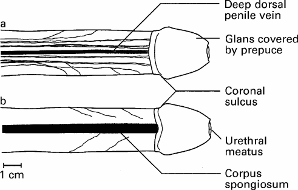
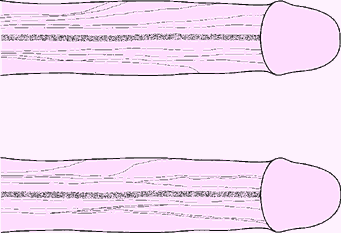
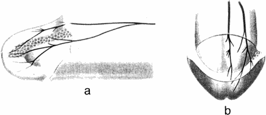
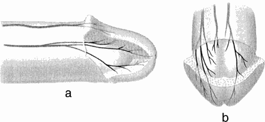

THE CIRCUMCISION REFERENCE LIBRARY
[CIRP Comment: This report of an anatomical investigation of the innervation of the human penis, which was published in July 1998, contains very important and useful information. There are, however, some glaring deficiencies of which one should be aware.
The first concerns their literature review, which overlooked the very important work on the innervation of the foreskin, The prepuce: specialized mucosa of the penis and its loss to circumcision, that was published in the same journal in March 1996 — 2 years and 4 months before.
Secondly, this work was carried out in the United States on anatomical speciments taken from cadavers. The authors fail to state if the cadavers were circumcised. If they were, and this is likely because the work was done in the United States, then they were working with cadavers who had an incomplete penis.
Thirdly, this work contains no information whatsoever on the innervation of the foreskin and its relationship and connection to the dorsal nerve. This is another serious omission.]
C. C. YANG and W. E. BRADLEY
Department of Urology, University
of Washington, Seattle, USA
|
Objective To determine the distribution of the dorsal nerve of the penis (DNP), the principal somatosensory nerve innervating the phallus, along the penile shaft and within the glans penis. Materials and Methods The DNP was dissected in human autopsy specimens, using low magnification, following the course of the nerve from the symphysis pubis into the glans penis. Results The shaft and glans were innervated by separate populations of axons. The lateral and ventral portions of the penile shaft were innervated by branches arcading from the dorsal midline radiating toward the ventral surface. These branches were very variable and some were seen to penetrate the corpus spongiosum. The axons innervating the glans were constant |
in a dorsal, midline location along most of the penile shaft, and once within the glans, there was abundant branching. Undulations in the nerves were noted along the penile shaft. Conclusions The lateral arcading branches of the DNP provide a sensory pathway on the ventral and lateral penile shaft, and the termination of the fibres at the corpus spongiosum is consistent with pudendal innervation of the penile urethra. The distinct pattern of innervation of the glans emphasizes the role of the glans as a sensory structure. These findings may aid in planning penile surgical procedures. Keywords Dorsal nerve, penis, neuroanatomy, erection, ejaculation |
The skin of the human phallus is innervated by the dorsal nerve of the penis (DNP). The significance of this nerve in erectile and ejaculatory function has been shown in numerous clinical observations in animals and humans. Ablation of the DNP in monkeys [1] and rats [2] resulted in impaired mating activity and ejaculatory function. Bors and Comarr [3] observed in that patients with spinal injury after bilateral pudendal neurectomy had total loss of spontaneous erectile and ejaculatory function."
Although the DNP is crucial to normal male sexual functioning, a detailed anatomical investigation of the distribution of this nerve along the penile shaft and glans has not been performed. A description of this nerve along the penis provides insight into the neurophysiology of male sexual function. In addition, the patterns of innervation provide pertinent information for surgical penile reconstructive procedures. This study is a report on the course, distribution and variations of the DNP on the penile shaft and glans penis in man.
The DNP in fresh autopsy cadavers (mean age 65 years) were dissected with the aid of an operating microscope (x15-30) and operating loupes (x2.5). Twenty-two penises were dissected to document penile shaft neuroanatomy and six specimens were used to document glanular innervation. Antegrade dissections of the DNP were performed after removal of the penile shaft skin and fasciae. The DNP was identified as it passed beneath the pubis, and branches were traced either along the penile shaft or into the glans. Nerves were followed until they were beyond the resolution of the magnifying instruments.
The pudendal nerve is classically described as being derived from the second to fourth sacral segments and is composed of three main divisions, the dorsal nerve of the penis (or clitoris), the perineal nerve, and the inferior rectal nerve. The DNP arises close to the perineal nerve as the pudendal nerve exits Alcock's canal, a tunnel formed by a division of the obturator fascia along the lateral wall of the ischiorectal fossa. The DNP travels along the ramus of the ischium and then along the margin of the inferior ramus of the pubis, until it pierces the urogenital diaphragm. The nerve joins the penile shaft just beneath the inferior pubic ligament [4].
|  Fig. 1. The dorsal nerve of the penis (DNP)on the penile shaft; a, dorsal view; b, ventral view. The branches of the nerve radiate ventrolaterally to approach the corpus spongiosum and urethra. |
The present study focused on the distribution of the DNP along the penis. The main trunk of the nerve was identified bilaterally at the base of the penis, lying within 0.5 cm on either side of the deep penile vein. The nerve lay on the surface of the tunica albuginea of the corpus cavernosum beneath the deep fascia of the penis (Buck's fascia). Thin connective tissue adhered the nerve to the tunica. The superficial penile fascia (dartos layer) and the penile skin lay superficial to this layer. Sparse subcutaneous tissue was present beneath the penile shaft skin, so that the DNP was close to the epithelial surface. Cutaneous connections were not identified as the penis was degloved for dissection.
|  Fig. 2. Two speciments illustrating the variability in the distribution of the DNP lateral fibres. No symmetry was seen between right and left sides of the penis. In some specimens, one side of the penile shaft had more radiations of fibres than the opposite side. In other dissections, one side would immediately branch whereas none would do so on the contralateral half until the level of the mid shaft. Branches showed few interconnections. |
The DNP was composed of two different populations of axons (Fig. 1). The first group consisted of fibres travelling along the dorsal midline and terminating in the glans. The other group of fibres radiated from the main trunk over the lateral and ventral aspects of the penile shaft. These branches were very variable in number and location (Fig. 2). A constant feature was the lateral direction of nerve branching, away from the main trunk, with no evidence of axons crossing the dorsal midline. The calibre of the nerve bundles varied and gradually diminished as the branching increased. Contrasting with a previous report, this study found no DNP branches perforating the tunica albuginea [5]. The ventral aspect of the penis revealed a paucity of nerves. Attention was paid to identify branches of the perineal nerve, particularly in the cleft between the corpus spongiosum and corpora cavernosa; no branches were identified. In several specimens, DNP fibres radiating from the dorsal aspect penetrated the corpus spongiosum (Fig. 1b). These fibres presumably innervated the urethra, as shown in feline electrodiagnostic studies [6].
|  Fig. 3. Glans penis. a, Left lateral view and b, dorsofrontalview, with a cut-away view just proximal to the urethral meatus. The most medial nerve bundle on the penile shaft divided into dorsal and ventral glanular branches. The nerve distribution on the right side is not shown. The urethral meatus is designated as a cleft at the apex of the glans. |
At 1-2 cm proximal to the corona glandis, the DNP dorsal trunk divided into 2-3 nerve bundles which entered the glans (Fig. 3). The dorsal bundles extended straight into the glans to form medial glanular branches, and ventrolateral branches arose from the lateral bundles. The terminal 'twigs' of the most distal nerve branches radiated toward the urethral meatus (Fig. 4). As the DNP entered the glans, it immediately branched. Each of the main glanular branches travelled along the tunical surface, giving rise to a network of smaller branches extending into the substance of the glans toward the epithelium. Thus, while the DNP and its branches along the shaft were just beneath the skin and fasciae, the main branches within the glans were 3-6 mm from the epithelial surface. The branching within the glans was an extensive three-dimensional array, in contrast to the more limited two-dimensional pattern along the shaft. Nerve fibres did not cross the midline, nor were there any obvious ganglia within the glans. No discernible pattern of intercommunication between the branches was noted.
|  Fig. 4. Glans penis. a, Right lateral view and b, dorsofrontal views showing both right- and left-sided nerve distribution. Multiple 'twigs' were seen trasversing into the spongy tissue of the glans. |
At low magnification, the nerve branches along the shaft had a serpiginous appearance, with fascicles within a nerve branch undulating at the same frequency. While manipulating the nerve during dissections, these undulations were irreversibly straightened. Nerves within the glans did not have a serpiginous appearance.
Erection and ejaculation in man require the participation of the autonomic and somatic nervous systems [7]. The emphasis in most human anatomical studies has focused on the contribution of the autonomic nervous system [8,9]. However, clinical data from animal and human studies have shown the significant role of somatosensory input to male sexual function, which is mediated through the DNP, the primary sensory nerve of the human penis. This study provides the first gross anatomical documentation of the character and distribution of the DNP along the penile shaft and glans penis.
Bors and Comarr [3] observed impairment of erectile capacity in patients with spinal cord injury who underwent pudendal neurotomy to improve voiding. Animal studies suggested that this deficit was caused by the interruption of that portion of the pudendal nerve conveying axons of the DNP [1,2]. The crucial role of the DNP in human erectile function was further supported by Seftel et al. [10] who showed that reflex erections could be abolished by anaesthetizing the DNP. Investigations of the pudendal nerve and its influence on ejaculation have also defined the critical importance of the DNP in this response. The contraction of the bulbocavernosus muscle (BCM) is the predominant force for expelling semen from the bulbous urethra [11]. Reflex contraction of this muscle after stimulation of the DNP has been documented with electrophysiological studies [12]. Vibratory stimuli applied to the glans penis induced ejaculation in men with spinal cord injury [13,14], supporting the concept that the DNP is the principal source of afferent excitatory drive to the BCM and ejaculation.
Two populations of axons form the DNP, one with a constant course along the dorsum of the penis and then abundantly branching within the glans, and the other displaying a highly variable, although less extensive array of nerves along the penile shaft. The distinct pattern of glanular innervation prompts the question; what is the utility of the glans penis? From a urinary standpoint, there is no obvious functional advantage to having spongy tissue at the end of the urethra. For erectile function, the glans may act as a sensory organ, with transmission of sensory afferents through the DNP to the CNS. As the glans distends during erection, there is a resultant increase in glanular surface area. Stretching of the epithelial rete papillae exposes more sensory receptors to stimulation. The afferent impulses are conveyed to the intermediolateral cell column in the lumbar and sacral spinal cord, and to higher CNS centres such as the cortex. The resultant efferent impulses generated further propagate the sexual response by maintaining erection or initiating ejaculation. The abundant branching of the DNP within the glans supports the supposition that the glans acts as a sensory end-organ for sexual reflexes; animal studies also affirm this [1,2,15-17].
Clinical observations in patients with spinal cord injury by Kuhn [18] and others [13,14] indicate that the corona glandis and frenulum are areas of lower threshold for the induction of erection and ejaculation than are other areas of the penis. The present study showed no areas in the glans to be more densely innervated than others. Halata and Munger [19] reported a higher density of sensory receptors specific to the genital skin, called genital corpuscles, in the region of the corona and frenulum; the higher sensitivity in these regions may be based purely on receptor density. Whether the glans and the penile shaft are of equipotential value for the initiation of neural impulses during erection and sexual intercourse awaits further research, including more studies on genital receptors.
Some of the lateral fibres of the DNP penetrated the corpus spongiosum, the sinusoidal erectile tissue surrounding the urethra. The fibres of the DNP appeared to penetrate the substance of the corpus spongiosum to innervate the urethral lumen. Pudendal innervation of the urethra had been previously documented in the cat [6,20] but has not been confirmed in the human. As the function of the DNP is primarily somatosensory and dedicated exclusively to sexual reflexes, urethral sensation of the passage of seminal fluid during ejaculation may be the somatic afferent information necessary for sustaining reflex BCM contractions until the expulsion of all seminal fluid is complete. The pathway from the DNP to the BCM has been shown electrodiagnostically in humans [12].
The distribution of the DNP along the penile shaft, with ventrolateral radiation to the corpus spongiosum and midline axons to the glans, is important for the surgical approach to corrective penile procedures. Classic descriptions in urological texts of the 'neurovascular bundles' on the dorsum of the penis make little mention of the ventrolateral radiations of the DNP [21]. Albeit undefined, the significance of these branches may be considerable in genital and urinary tract physiology. Nerve branching becomes more intricate at the distal end of the penile shaft, with no discernible neurovascular bundle. Surgical procedures on this area of the penis may result in denervation of significant portions of the glans, with consequent numbness and a higher likelihood of postoperative impotence. Incisions in the glans should be limited, and if needed, should be made as distally as possible. Large incisions should be made in the midline or parallel to the midline to avoid dividing the innervation of the glans. The findings from this study provide a new perspective on the innervation of the penis, and may be the basis for modifications to surgical approaches for Peyronie's disease, priapism and urethral reconstructive procedures.
In conclusion, the dorsal nerve of the penis innervates the phallus through two separate populations of axons; one with branches radiating ventrolaterally across the penile shaft, with branches to the corpus spongiosum and urethra, and one to the glans penis. The pattern of innervation to the glans supports the role of the glans as a sensory structure for sexual function. These anatomical findings may assist in planning penile surgical procedures.
The authors gratefully acknowledge Rudolf Vracko, MD, for his assistance in this study.
1 Herbert J. The role of the dorsal nerves of the penis in the sexual behaviour of the male rhesus monkey. Physiol Behav 1973; 10: 293–300
2 Larsson K & Sodersten P. Mating in male rats after section of the dorsal penile nerve. Physiol Behav 1971; 10: 567–71
3 Bors E & Comarr AE. Neurological disturbances of sexual function with special reference to 529 patients with spinal cord injury. Urol Surv 1960; 10: 191–220
4 The Urogenital System In Clemente CD, ed. Gray's Anatomy of the Human Body, 30th American edn. Philadelphia: Lea & Febiger, 1985; 1559–1564
5 Paick JS, Donatucci CF, Lue TF Anatomy of cavernous nerves distal to prostate: microdissection study in adult male cadavers. Urology 1993; 42: 145–9
6 Bradley W, Griffin D, Teague C, Timm G. Sensory innervation of the mammalian urethra. Invest Urol 1973; 10: 287–9
7 Krane RJ, Goldstein I, Saenz de Tajeda I. Medical Progress. Impotence. New Eng J Med 1989; 321: 1398–9
8 Walsh PC & Donker PJ. Impotence following radical prostatectomy: insight into etiology and prevention. J Urol 1982; 128: 492–7
9 Lue TF, Zeineh SA, Schmidt RA, Tanagho EA. Neuroanatomy of penile erection: its relevance to iatrogenic impotence. J Urol 1984; 131: 273–80
10 Seftel AD, Resnick MI, Boswell MV. Dorsal nerve block for management of intraoperative penile erection. J Urol 1994; 151: 394–5
11 Kollberg S, Petersen I, Stener I. Preliminary results of an electromyographic study of ejaculation. Acta Chir Scand 1962; 123: 478–83
12 Dick HC, Bradley WE, Scott FB, Timm GW. Pudendal sexual reflexes: electrophysiologic investigations. Urology 1973; 3: 376–9
13 Sarkarati M, Rossier AB, Fam BA. Experience in vibratory and electro-ejaculation techniques in spinal cord injury patients: a preliminary report. J Urol 1987; 138: 59–62
14 Pryor JL, LeRoy SC, Nagel TC, Hensleigh HC Vibratory stimulation for treatment of anejaculation in quadriplegic men. Arch Phys Med Rehabil 1995; 76: 59–64
15 Aronson LR & Cooper ML. Seasonal variation in mating behavior in cats after desensitization of glans penis. Science 1966; 152: 226–30
16 Hart BL Sexual reflexes in the male rat after anesthetization of the glans penis. Behav Biol 1972; 7: 127 30
17 Adler N & Berman G. Sexual behavior of male rats: effects of reduced sensory feedback. J Comp Physiol Psych 1966; 61: 240–3
18 Kuhn RA. Functional capacity of the isolated human spinal cord. Brain 1950; 73: 151
19 Halata Z & Munger B. The neuroanatomical basis for the protopathic sensibility of the human glans penis. Brain Res 1986; 371: 205–30
20 Martin WD, Fletcher TF, Bradley WE. Innervation of feline perineal musculature. Anat Rec 1974; 180: 15–30
21 Hinman F Jr. Atlas of Urosurgical Anatomy, Philadelphia: WB Saunders,1993; 443–5
C.C. Yang, MD, Assistant Professor of Urology.
W.E. Bradley, MD, Clinical Professor of Urology and
Neurology.
Correspondence: Dr. C.C. Yang, Department of Urology, Box
356510, University of Washington, Seattle, WA 98195, USA.
http://www.cirp.org/library/anatomy/yang1/